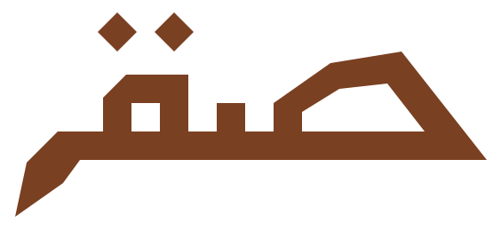
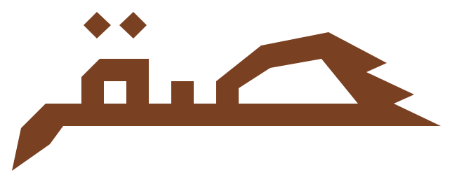
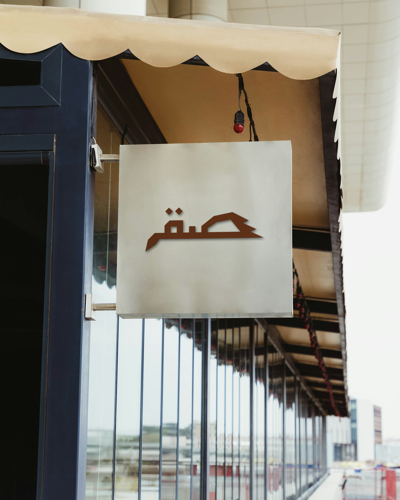
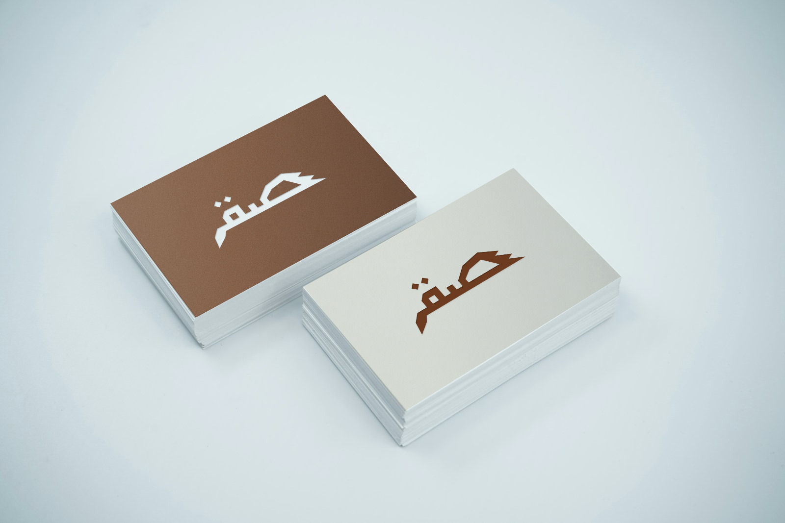
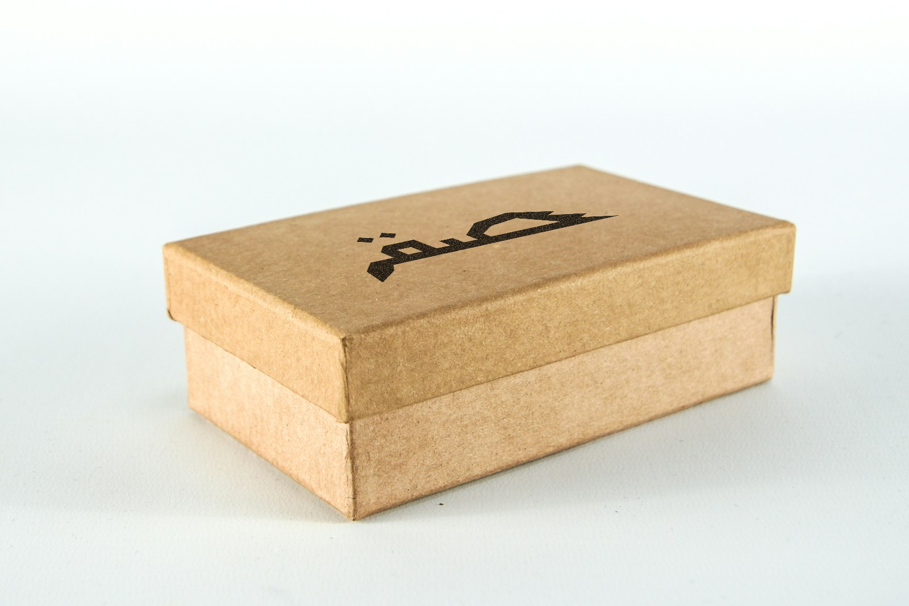
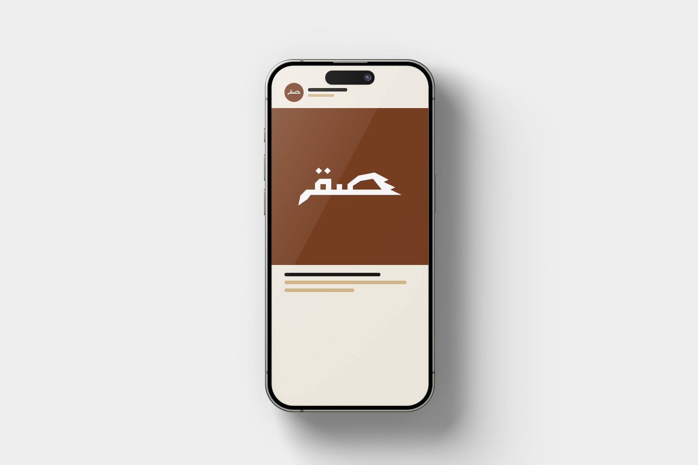

02 Logo versions
Primary · Glove Leather on BoneReversed · on Glove Leather

Small version · use from 16 to 32 px high
The name
is the bird.
The three Arabic letters of صقر, “falcon”, are drawn so that the word itself is a falcon in profile, facing the direction Arabic is read.
One concept: the name means falcon, so the name should be the falcon. Two elements: the word in geometric Kufi lettering, and a falcon in profile. One symbol: the two are the same shape.


Precision, heritage and speed, in one word that reads from a distance.
Made for the places the shop is seen: the sign above the door, a stamp in leather, a label on a box.

Small version · use from 16 to 32 px highKeep a clear margin on every side equal to x: the height of the head loop of the ق (the box with the eye).
Full version: 32 px high or more. Small version: 16 to 32 px high. Do not use below 16 px — the two dots merge.
Not yet tested in print. Run a printed proof before fixing a minimum.
Primary. The tanned leather of the falconer’s glove and hood.
The open desert the birds are flown over.
The yellow ring around a falcon’s eye. Small highlights on dark only.
A warm near-black for text and dark backgrounds.
A warm off-white for page and packaging backgrounds.
ص ق ر ١٢٣ Aa
Geometric Kufi. Angular like the logo, for names, titles and signs.
ص ق ر ١٢٣ Aa
Plain and readable in Arabic and Latin, for labels, prices and longer text.
Suggested pairing. Both are published under the SIL Open Font License on Google Fonts; check the licence for your use before adopting them. If they are not installed on this computer, the samples above are shown in a system font instead. Neither replaces the hand-drawn logo.
| Pairing | Ratio | Text | Large / logo |
|---|---|---|---|
| Glove Leather on Bone | 7.2 : 1 | Pass | Pass |
| Night Roost on Bone | 15.4 : 1 | Pass | Pass |
| White on Night Roost | 17.3 : 1 | Pass | Pass |
| White on Glove Leather | 8.1 : 1 | Pass | Pass |
| Falcon Eye on Night Roost | 8.0 : 1 | Pass | Pass |
| Night Roost on Dune Sand | 9.5 : 1 | Pass | Pass |
| Falcon Eye on Bone | 1.9 : 1 | Fail | Fail |
Text needs 4.5 : 1; large text and the logo need 3 : 1.
Do not stretch or squash it.
Do not rotate or tilt it.
Do not recolour it outside the palette.
Do not place it with too little contrast.
Do not add shadows, gradients, outlines or effects, redraw, move or remove any letter or dot, or retype the name in another typeface.


Packaging
Social profile and post| File | Status |
|---|---|
| logo/wordmark.svg | Vectorfull version, takes the colour of its surroundings |
| logo/wordmark-color.svg | Vectorfull version, Glove Leather |
| logo/wordmark-black.svg | Vectorfull version, black |
| logo/wordmark-white.svg | Vectorfull version, white |
| logo/wordmark-small.svg | Vectorsmall version |
| logo/wordmark-small-color.svg | Vectorsmall version, Glove Leather |
| logo/wordmark-small-black.svg | Vectorsmall version, black |
| logo/wordmark-small-white.svg | Vectorsmall version, white |
| mockups/mockup-*.png | Imagereal logo placed on free stock photos |
| PNG exports of the logo | Not producedno converter installed |
Test project. The Arabic lettering has not yet been read and confirmed by a native Arabic reader, which is required before this logo is approved.
Mockups are illustrations: the real logo file placed on free stock photos (Unsplash licence). They are not production files.
CMYK values are computed approximations. Confirm them with the printer before any print job.
Saqr · Brand identity · 2026